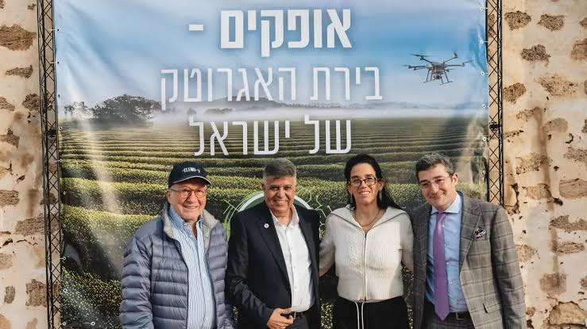
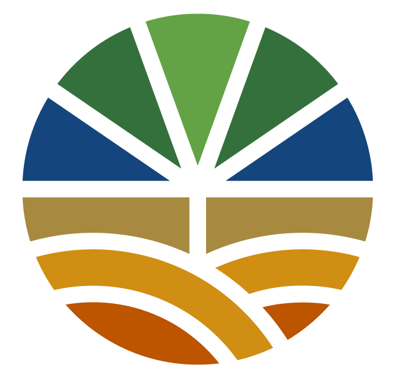
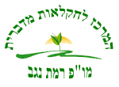
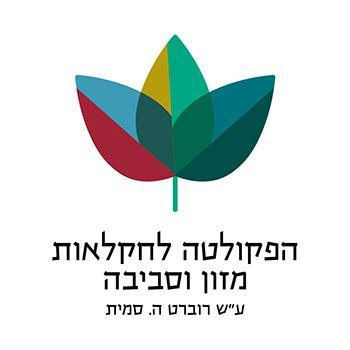
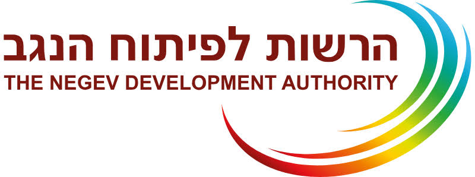
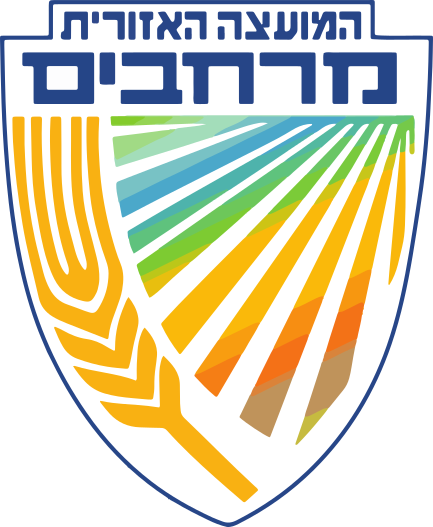

מי אנחנו

הסיפור שלנו
ישראל היא מעצמת אגרו-טק — מהשקיה בטפטוף ועד חקלאות מדבר, חיישנים חכמים ובשר מתורבת. אבל הידע, הדאטה והמחקר מפוזרים בין עשרות מקורות, מוסדות וחברות. AgroData נולד כדי לאחד את כל אלה לזירה אחת, נגישה ומעודכנת בזמן אמת.
מהעיר אופקים שבנגב — לב מתפתח של חדשנות חקלאית — אנחנו בונים את מרכז הנתונים והידע החקלאי המוביל בישראל, ומחברים אותו לעולם.
מה אנחנו עושים
מאגר וידע
איסוף וניהול נתוני החקלאות, מחקר אקדמי, חברות ומגמות — במקום אחד.
אינטליגנציה (AgroMind)
קופיילוט AI שמבין את כל הזירה ועונה על שאלות מעל הדאטה והמחקר.
זירה פיננסית
מסחר בסחורות ומדדים חיים, השקעות, בנקאות וגיוס הון לאגרו-טק.
מפות ו-GIS
שכבות לוויין — ירק, גשמים, חום ויבולים על גבי מפת ישראל.
קהילה ובלוג
ידע מעשי, מדריכים ותובנות מצוות המומחים — למגדל ולחוקר.
מדיניות וממשל
פרטיות, בעלות על נתונים ותקנים — מסגרת מסודרת ואמינה.
הערכים שלנו
השותפים שלנו

מכון וולקני
מו״פ רמת נגב
תנועת אור
הפקולטה לחקלאות
הרשות לפיתוח הנגב
מועצה אזורית מרחבים